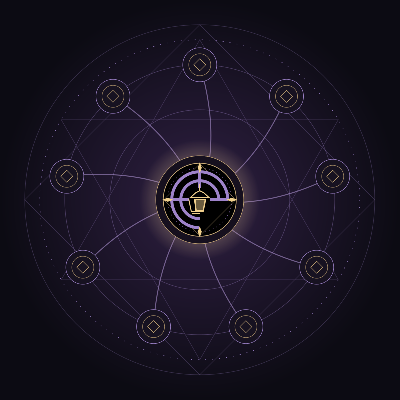

Follow the rabbit
Investigate before assuming. Let questions guide the exploration.
A CUNILAB EXPLORATION · CONCEPT STAGE
A curiosity-driven ecosystem of specialized AI workers. Explore the unknown, collaborate across disciplines, remember the journey, and create something real.
Dark arcane identity. Practical intelligence. Human direction.

01 / THE ORIGIN
Cunilab opens the entrance. Arcane Warren is the world beyond it.
Inspired by the rabbit and the underground tunnel, Cunilab embraces curiosity, experimentation and discovery. The Warren extends that philosophy into a collective of specialized AI workers, each exploring a different path toward a shared purpose.
Arcane fantasy is our symbolic language, not a substitute for clear engineering or human judgment.
Hidden knowledge, revealed through investigation and mastery.
A network of interconnected paths, where every discovery can guide the next explorer.
Together: a hidden network of specialized intelligence.
02 / THE CREED
Investigate before assuming. Let questions guide the exploration.
Test ideas against evidence. Prefer useful, simple creations.
Turn discoveries into practical outcomes and share what matters.
Record failures and learn from them rather than repeating them.
Intelligence serves intention. The purpose remains human.
03 / THE ORDER
A proposed organization where the Keeper sets direction, Lucerna coordinates, and Delvers contribute their individual mastery.
Objectives · approvals · accountability
 ORCHESTRATION
ORCHESTRATIONThe Lightkeeper · planning and coordination
Recall · preserve · refine
04 / THE DELVERS
An expandable roster of proposed specialists. Each Delver has a name, profession, capabilities and explicit boundaries.
CIRCLE 01
Engineering & technology
Build software, infrastructure and automation.
CIRCLE 02
Marketing & communication
Connect ideas to audiences through strategy and storytelling.
CIRCLE 03
Creative & media
Design visuals, video, animation and 3D creations.
CIRCLE 04
Research & intelligence
Investigate markets, evidence and emerging possibilities.
CIRCLE 05
Product & innovation
Prototype, test and turn ideas into useful products.
CIRCLE 06
Business & finance
Explore pricing, sales and customer relationships.
CIRCLE 07
Security & governance
Review quality, risks, permissions and compliance.
CIRCLE 08
Operations & coordination
Coordinate schedules, projects and repeatable workflows.
CIRCLE 09
Knowledge & learning
Curate discoveries, documentation and shared lessons.
05 / THE EXPEDITION
Define the human objective.
Assemble the right Delvers.
Research and plan.
Collaborate and execute.
Test and review results.
Deliver for human acceptance.
Preserve lessons in Cairn.
Lucerna coordinates Cyra's research, Mira's product concept, Thalos's engineering assessment, Veyra's campaign, Lyra's visual design, Auren's financial analysis and Aldric's quality review. The Keeper approves consequential actions. Cairn preserves validated lessons.
06 / REMEMBER THE JOURNEY
Cairn Memory is the chosen memory foundation for Arcane Warren.
Like stones marking a trail, meaningful discoveries, decisions and failures can guide future expeditions. The intended integration will use Cairn rather than duplicate its memory infrastructure. Agent access and scope isolation must be validated during implementation.
Explore Cairn Memory ↗07 / THE LANGUAGE
08 / THE ROAD AHEAD
Agent profiles, skills, tools and human approval.
Task delegation, collaboration and Cairn integration.
Reusable workflows and additional specialists.
Evaluation and human-approved improvements.
This is a foundation blueprint, not a claim of currently available agent functionality.
CUNILAB PRESENTS
Many minds, many paths, one purpose.
Follow the project ↗